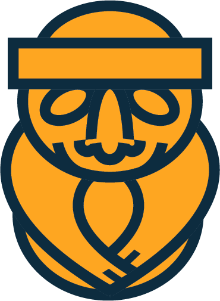

ДА
До Кореи лететь далеко
НО
но разве бывает слишком далеко до страны, где весной цветёт каждая улица?

JEJU
TRIP
01 / 07
ДА
Без корейского языка в вывесках легко запутаться
НО
с нами вы не потеряетесь: гид рядом, а программа продумана до мелочей
JEJU
TRIP
02 / 07
ДА
Чтобы встретить рассвет на Сонсан Ильчульбон, придётся встать затемно
НО
первое солнце над вулканом в океане стоит каждой минуты сна
JEJU
TRIP
03 / 07
ДА
Корейская еда бывает очень острой
НО
корейское барбекю под тихий звон рюмок соджу невозможно забыть
JEJU
TRIP
04 / 07
ДА
У дворца Кёнбоккун всегда много людей
НО
в ханбоке вход бесплатный, а каждый кадр выглядит как сцена из дорамы
JEJU
TRIP
05 / 07
ДА
За одну поездку невозможно увидеть всю Корею
НО
иногда хватает десяти дней, чтобы понять: сюда нужно вернуться
JEJU
TRIP
06 / 07
JEJU
TRIP
Корея зовёт
Сакура
от Чеджу до Сеула
1–10 апреля 2027
10 дней / 9 ночей
Чеджу → Пусан → Кёнджу → Сеул
Хотите с нами? Пишите в Direct
пришлём программу и все подробности
07 / 07